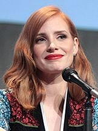

Joseph A. Cooper é um piloto treinado pela NASA com formação em engenharia e piloto da expedição interestelar. Cooper tem dois filhos, Tom Cooper e Murphy Cooper . Ele é interpretado pelo ator Matthew McConaughey.
Ator
Nome:Anne Hathaway
Personagem:Brand
Idade:42 anos
Sobre o personagem
A Dra. Amelia Brand é uma bióloga da expedição enviada através do Buraco de Minhoca para tentar realocar a raça humana. Ela é filha do diretor da NASA , Dr. John Brand . Ela tem uma sobrinha e um sobrinho, filhos do irmão.
Ator

Nome:Jessica Chastain
Personagem:Murphy
Idade:48 anos
Sobre o personagem
Murphy Cooper era a filha mais próxima de Cooper . Ela tinha um impulso para explorar e descobrir o desconhecido, muito parecido com sua mãe.
Ator
Nome:Casey Affleck
Personagem:Tom
Idade:49 anos
Sobre o personagem
Tom Cooper é o filho mais velho de Erin e Joseph , de quinze anos . À medida que crescia, Tom se apropriou mais do estilo de vida agrário do pai do que Murphy , que herdou do pai o impulso de explorar o desconhecido.
Ator
Nome:Michael Caine
Personagem:Professor Brand
Idade:92 anos
Sobre o personagem
O professor John Brand foi um cientista e diretor dos remanescentes da NASA , além de pai de Amelia Brand . Ele convida o ex-piloto da NASA Joseph Cooper para se juntar à expedição através do buraco de minhoca . Ele é interpretado pelo ator Michael Caine .